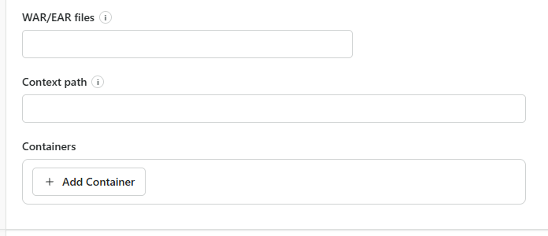

Container Deployer
Deploys a WAR or EAR file to Tomcat, JBoss or GlassFish. Credentials are chosen by id.
When to use it
Use it to put a web service, such as a store backend or a leaderboard, on an application server after the build.
How to set it up
- Open the build configuration and click Settings › Build Steps.
- Click Add build step. Type
Container Deployerin Filter step types if you like, then click the Container Deployer tile (group Upload and deploy). - Type a Step name, for example
Deploy leaderboard. - Fill in the fields described below.
- Optional: set Execute step, Conditions and Retry on failure. See The steps list and the step editor.
- Click Save.

Every field
| Field | What it does | Default | Example |
|---|---|---|---|
| WAR/EAR files | The files to deploy, relative to the workspace root. Ant-style globs work, such as **/*.war. | Empty | target/leaderboard.war |
| Context path | The context path the container uses to publish the WAR or EAR. It may be overridden if the file has its own container configuration. | Empty | /leaderboard |
| Containers | Add one or more containers to deploy to. Choose the kind: Tomcat 4.x to 9.x, JBoss AS 3.x to 7.x, or GlassFish 2.x to 4.x. Each has its own fields, below. | None | Tomcat 9.x |
| Credentials (every container) | The username and password credential for the container's manager. | None | tomcat-deployer |
| Tomcat URL | The Tomcat base URL, such as https://tomcat.studio.example:8443. | Empty | https://tomcat.studio.example:8443 |
| Alternative deployment context (Tomcat) | Overwrites the context path from the main block. | Empty | /lb |
| Manager context path (Tomcat) | Overwrites the default /manager for Tomcat 4 to 6 or /manager/text for Tomcat 7 and newer. | Default | /manager/text |
| JBoss URL | The JBoss URL to deploy to. | Empty | http://jboss.studio.example:8080 |
| GlassFish home, GlassFish admin port, GlassFish hostname | Where GlassFish is installed, and where its admin server listens. | Empty | /opt/glassfish4, 4848, glassfish.studio.example |
A worked example
Deploy the leaderboard service to the studio Tomcat. Step name Deploy leaderboard, WAR/EAR files target/leaderboard.war, Context path /leaderboard, container Tomcat 9.x with Credentials tomcat-deployer and Tomcat URL https://tomcat.studio.example:8443.
What you see when it runs
The console shows the files found and a line for each deployment to the container. A deployment that the container refuses fails the step.
Problems and fixes
| Problem | What to do |
|---|---|
| The credential is not in the list | Create a username and password credential first. See Secrets. |
| Nothing is deployed | Check the pattern in WAR/EAR files: it is relative to the workspace root. |
| 401 or 403 from Tomcat | The user needs the manager script role in Tomcat. |